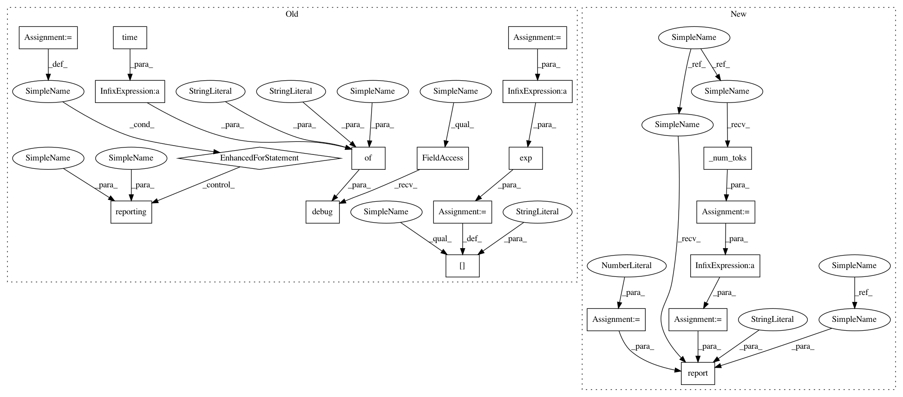

6aad1de658a933d3fa376f7fe9abf419da8a8bd2,python/baseline/tf/seq2seq/train.py,Seq2SeqTrainerTf,test,#Seq2SeqTrainerTf#Any#Any#Any#,69
Before Change
epochs = self.valid_epochs
total_loss = 0
steps = len(vs)
metrics = {}
start = time.time()
for batch_dict in vs:
feed_dict = self.model.make_input(batch_dict)
vals = self.sess.run([self.test_loss], feed_dict=feed_dict)
lossv = vals[0]
total_loss += lossv
self.log.debug({"phase": phase, "time": time.time() - start})
avg_loss = total_loss/steps
metrics["avg_loss"] = avg_loss
metrics["perplexity"] = np.exp(avg_loss)
for reporting in reporting_fns:
reporting(metrics, epochs, phase)
return metrics
@register_training_func("seq2seq")
After Change
)
return metrics
def test(self, vs, reporting_fns, phase="Valid"):
epochs = 0
if phase == "Valid":
self.valid_epochs += 1
epochs = self.valid_epochs
total_loss = 0
total_toks = 0
metrics = {}
start = time.time()
for batch_dict in vs:
feed_dict = self.model.make_input(batch_dict)
lossv = self.model.sess.run(self.test_loss, feed_dict=feed_dict)
toks = self._num_toks(batch_dict["tgt_lengths"])
total_loss += lossv * toks
total_toks += toks
metrics = self.calc_metrics(total_loss, total_toks)
self.report(
epochs, metrics, start,
phase, "EPOCH", reporting_fns
)
@register_training_func("seq2seq")
def fit(model, ts, vs, es=None, **kwargs):
In pattern: SUPERPATTERN
Frequency: 3
Non-data size: 19
Instances
Project Name: dpressel/mead-baseline
Commit Name: 6aad1de658a933d3fa376f7fe9abf419da8a8bd2
Time: 2018-11-26
Author: blester125@users.noreply.github.com
File Name: python/baseline/tf/seq2seq/train.py
Class Name: Seq2SeqTrainerTf
Method Name: test
Project Name: dpressel/mead-baseline
Commit Name: 6aad1de658a933d3fa376f7fe9abf419da8a8bd2
Time: 2018-11-26
Author: blester125@users.noreply.github.com
File Name: python/baseline/dy/lm/train.py
Class Name: LanguageModelTrainerDynet
Method Name: test
Project Name: dpressel/mead-baseline
Commit Name: 6aad1de658a933d3fa376f7fe9abf419da8a8bd2
Time: 2018-11-26
Author: blester125@users.noreply.github.com
File Name: python/baseline/tf/seq2seq/train.py
Class Name: Seq2SeqTrainerTf
Method Name: test
Project Name: dpressel/mead-baseline
Commit Name: 6aad1de658a933d3fa376f7fe9abf419da8a8bd2
Time: 2018-11-26
Author: blester125@users.noreply.github.com
File Name: python/baseline/pytorch/lm/train.py
Class Name: LanguageModelTrainerPyTorch
Method Name: test